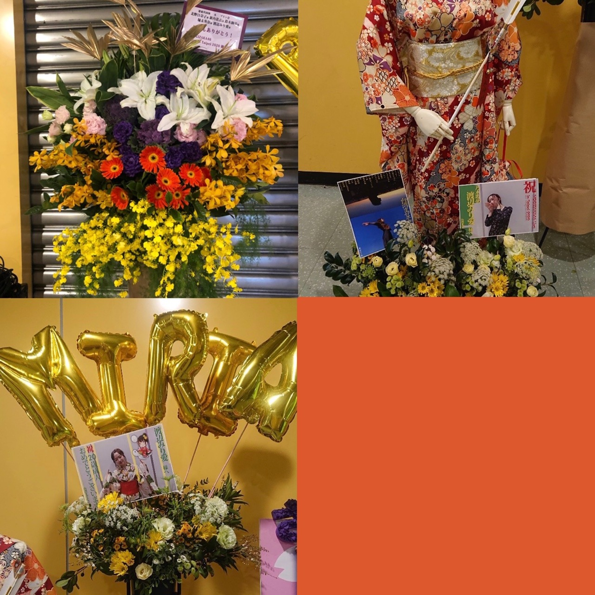

2020/0123Thu傘模様
新成人の皆様、おめでとうございます。
私も遂に新成人を迎える事が出来ました
葉月、桃子、美月と乃木神社にて
成人式を行いました。感慨深い、、
今までずっとお姉さんメンバーの振袖姿を
写真で見てきていつかこうなりたいなあと
ずっと思ってきていたから
遂に自分が迎えるとなると、何だか恥ずかしく
嬉しくもありました！
メンバーから見たよ！素敵だった！という声を
頂いてとても嬉しかった〜

そして
NOGIZAKA46 Live in Taipei 2020
お越し下さった皆様、ありがとうございました！
皆様に会える機会ができた事が
何より嬉しかったです。
名前を一所懸命呼んでくれたり
タオルを掲げてくれたり
本当にありがとうございました！

デザイン性のある素敵なお花もありがとう。
勇気付けられます
来られなかった皆様も
コメントや握手会等で応援して下さり
ありがとうございました！
メンバーと101タワーに登ったり
沢山写真を撮ってふざけて
今回もすっごく楽しかったです
またすぐ来られるように
私達も精一杯精進してまいります

さゆ
悲しいって気持ちももちろんあるけど
きっとさゆとは卒業した後も
会えるって分かってるから悲しい顔は
本人には見せず笑顔で送り出したい。
いろんな所行っていろんな話したね
先輩後輩という関係がいつの間にかこんなに
仲良くなれて私は凄く嬉しい
さゆのパフォーマンスが好き！
白石さん
私が落ち込んでいた時
私の身体よりも大きな袋にお下がりのお洋服を
大量に入れて持ってきてくれた事
いきなり抱き締めてもそれ以上に
ぎゅーっと強く抱き締めてくれる事
2期生に対してかけてくれた大事な言葉
白石さんもさゆも強い背中は何度も見てきた、
苦しんでる姿は
後輩に見せた事がありません。
まだ時間は残っているので
みんなで思い出を沢山
作っていけたらいいなあ
そして！
"2期生の単独ライブ"が
昨日のまいちゅんのオールナイトニッポンにて
発表されました。
場所は代々木第一体育館
かなり前から話は頂いていたので
ファンの皆さんに早く言いたくて
うずうずしておりました、笑
素敵なものが見せられるよう、
全力で頑張ります。


みり愛
2020/01/23 20:18
コメント(610)
ブログ更新ありがとう！
そして！2期生単独ライブおめでとう
ようやく単独ライブ出来るね！待ってたよ！絶対行くからね！
2期生の力見せつけろ！
20歳おめでとう！いい一年にしてね！
そして！2期生単独ライブおめでとう
ようやく単独ライブ出来るね！待ってたよ！絶対行くからね！
2期生の力見せつけろ！
20歳おめでとう！いい一年にしてね！
みり愛ちゃん〜！
ブログ更新ありがとう！！
成人おめでとう！！振袖似合ってるよ〜！
わたしもあと2年後だあ〜！（笑）
2期生ライブおめでとう！！！！
ほんとにほんとにうれしい！
受験も終わってるしぜったい行くね！
わたしもはやくみり愛ちゃんに直接会って2期生ライブおめでとうって言いたいです！♪
2020年もよろしくおねがいします〜！
ずっとみり愛ちゃんがいちばんだよ♡
応援してます！だいすき！
あやか☺︎
ブログ更新ありがとう！！
成人おめでとう！！振袖似合ってるよ〜！
わたしもあと2年後だあ〜！（笑）
2期生ライブおめでとう！！！！
ほんとにほんとにうれしい！
受験も終わってるしぜったい行くね！
わたしもはやくみり愛ちゃんに直接会って2期生ライブおめでとうって言いたいです！♪
2020年もよろしくおねがいします〜！
ずっとみり愛ちゃんがいちばんだよ♡
応援してます！だいすき！
あやか☺︎
祝 成人みりあ♪おめでとうございます 素敵な人生に成ります様に♪ヽ(´▽｀)/・・・・今から、まいちゅん♪のANNを聞くんですが❗２期生単独？(゜ロ゜)そりゃ〜〜〜めでてえ〜〜な(￣ー￣)
2期生単独ライブおめでとう 九州に住んどるけん、見に行くことは出来ないかもしれないけどめっちゃ嬉しいし楽しみにしてるよ！2期生の凄さを見せつけてください!!2期生大好きです!!
成人おめでとうございます
最近、だんだん色っぽくなってきたね✨
2期生ライブやったねめちゃくちゃ嬉しいよ(^-^)/
必ずチケットをゲットしてみり愛のパフォーマンスを観に行くよ
最近、だんだん色っぽくなってきたね✨
2期生ライブやったねめちゃくちゃ嬉しいよ(^-^)/
必ずチケットをゲットしてみり愛のパフォーマンスを観に行くよ
ブログ更新ありがとうございます！
振袖姿とっても素敵でした！
台北も直接現地に行くことは出来なかったけれど日本から応援してましたよ！
2期単独ライブ！行きたいです！みり愛ちゃんのダンスがとっても好きなので間近で見られるのを楽しみにしています！
2期生それぞれの雰囲気が合わさったらどうなるのか今からワクワクします！
これからリハもあると思うけれどがんばってね！応援してます！
振袖姿とっても素敵でした！
台北も直接現地に行くことは出来なかったけれど日本から応援してましたよ！
2期単独ライブ！行きたいです！みり愛ちゃんのダンスがとっても好きなので間近で見られるのを楽しみにしています！
2期生それぞれの雰囲気が合わさったらどうなるのか今からワクワクします！
これからリハもあると思うけれどがんばってね！応援してます！
みり愛たーーーーん＼(^o^)／お疲れさまでした
成人おめでとう＼(^o^)／
ニュースの4人の振り袖の中で、やっぱりみり愛は一番大人っぽかったなあ(*´ω｀*)
でも、我らの中でみり愛は永遠に妹だよ＼(^o^)／♡♡♡♡
あっ、1枚めの振り袖姿はめちゃキレイ(*´ω｀*)♡♡
台北ライブもお疲れさまでした
そして、2期生単独ライブはいよいよ来たよね＼(^o^)／凄くたのしみ
みり愛のソロ詩やダンスコーナーが出来たら嬉しいなあ＼(^o^)／
3枚めの写真、いつの間にか髪の毛そんなに長くなったか？
でも大人っぽくて可愛いよ(*´ω｀*)
4枚めのこのロイヤルブルーはめちゃ似合うよ(｡>﹏<｡)
本当にメンバーの派手な私服姿を見ると新鮮で可愛いなあ(*´ω｀*)
そして、この指のポーズは可愛すぎる(｡>﹏<｡)みり愛たーーーん、かわいいーーーと思わず叫んじゃう(｡>﹏<｡)♡♡♡♡
最後はさゆとまいやんへの思い出を語って、
本当にさゆと仲良いよね
最近皆はまいやんの思い出ばっかって、さゆのことも忘れてなくて嬉しいよ(´；ω；｀)
残りの時間を大切にして
これからも頑張って(/･ω･)/
成人おめでとう＼(^o^)／
ニュースの4人の振り袖の中で、やっぱりみり愛は一番大人っぽかったなあ(*´ω｀*)
でも、我らの中でみり愛は永遠に妹だよ＼(^o^)／♡♡♡♡
あっ、1枚めの振り袖姿はめちゃキレイ(*´ω｀*)♡♡
台北ライブもお疲れさまでした
そして、2期生単独ライブはいよいよ来たよね＼(^o^)／凄くたのしみ
みり愛のソロ詩やダンスコーナーが出来たら嬉しいなあ＼(^o^)／
3枚めの写真、いつの間にか髪の毛そんなに長くなったか？
でも大人っぽくて可愛いよ(*´ω｀*)
4枚めのこのロイヤルブルーはめちゃ似合うよ(｡>﹏<｡)
本当にメンバーの派手な私服姿を見ると新鮮で可愛いなあ(*´ω｀*)
そして、この指のポーズは可愛すぎる(｡>﹏<｡)みり愛たーーーん、かわいいーーーと思わず叫んじゃう(｡>﹏<｡)♡♡♡♡
最後はさゆとまいやんへの思い出を語って、
本当にさゆと仲良いよね
最近皆はまいやんの思い出ばっかって、さゆのことも忘れてなくて嬉しいよ(´；ω；｀)
残りの時間を大切にして
これからも頑張って(/･ω･)/
ブログ更新ありがとう！
成人おめでとうだね！
2期生ライブは本当に行きたい。
2期生大好きだから。
楽しみにしてるね！
成人おめでとうだね！
2期生ライブは本当に行きたい。
2期生大好きだから。
楽しみにしてるね！
みり愛ちゃんブログ更新ありがとう！
成人おめでとう！！めちゃくちゃ綺麗！
早く握手会に行きたい！それと2期生単独ライブも必ず行きます！当たりますように(*꒦ິ³꒦ີ)(*꒦ິ³꒦ີ)
成人おめでとう！！めちゃくちゃ綺麗！
早く握手会に行きたい！それと2期生単独ライブも必ず行きます！当たりますように(*꒦ິ³꒦ີ)(*꒦ິ³꒦ີ)
ブログ更新あざます！
みり愛ちゃんももう成人してしまいましたね。時が経つのは早いね。すっかり大人の女性になっちゃったね。浴衣めちゃくちゃ似合ってたよ！ヤンマガのチェキもまた当たりましたんでまた見せにいきますぞよ。
あまり先輩との事を言わなくて自分の中できっと沢山留めているであろうから思い出がいっぱいなんだろうな。卒業で寂しい部分もあると思うけど応援してみり愛ちゃんもその卒業した方達の頑張りを見て刺激を貰えるそんな関係であったら嬉しいなと思います。
そして2期ライブ、遂に来たこの時が、いやー嬉しい！
当たるかな〜いや、当てるよめっちゃ見たいもん。
祈っててくれ〜当たるよ〜って
握手会とかもまだまだ先だけど会えない時間が想いを育むからね？笑笑
まぁこんなとこでまたあいまそ
追記、今日美月ちゃんの写真集買いました。この文を見てない事を祈ります。
じゃあまた！
みり愛ちゃんももう成人してしまいましたね。時が経つのは早いね。すっかり大人の女性になっちゃったね。浴衣めちゃくちゃ似合ってたよ！ヤンマガのチェキもまた当たりましたんでまた見せにいきますぞよ。
あまり先輩との事を言わなくて自分の中できっと沢山留めているであろうから思い出がいっぱいなんだろうな。卒業で寂しい部分もあると思うけど応援してみり愛ちゃんもその卒業した方達の頑張りを見て刺激を貰えるそんな関係であったら嬉しいなと思います。
そして2期ライブ、遂に来たこの時が、いやー嬉しい！
当たるかな〜いや、当てるよめっちゃ見たいもん。
祈っててくれ〜当たるよ〜って
握手会とかもまだまだ先だけど会えない時間が想いを育むからね？笑笑
まぁこんなとこでまたあいまそ
追記、今日美月ちゃんの写真集買いました。この文を見てない事を祈ります。
じゃあまた！
ブログ更新ありがとう！
この度は新成人おめでとうございます。
ファン一同心からみり愛ちゃんの成人をお祝い致します。
いつも冷静で考え方が大人で、でもメンバーといる時の笑顔やおちゃらけてるみり愛ちゃんをが大好きだよ！！
そして海外公演お疲れ様でした
日本から応援してたけど声援届いたかなぁ笑
二期生ライブなんとしても行かせてもらいますよ
バスラ含め楽しみにしてるね！
寒い日が続きます。どうかお体には気をつけて！！
お仕事ファイト〜
この度は新成人おめでとうございます。
ファン一同心からみり愛ちゃんの成人をお祝い致します。
いつも冷静で考え方が大人で、でもメンバーといる時の笑顔やおちゃらけてるみり愛ちゃんをが大好きだよ！！
そして海外公演お疲れ様でした
日本から応援してたけど声援届いたかなぁ笑
二期生ライブなんとしても行かせてもらいますよ
バスラ含め楽しみにしてるね！
寒い日が続きます。どうかお体には気をつけて！！
お仕事ファイト〜
みり愛ちゃんブログ更新ありがとう！！まずは改めて成人おめでとう！ありがとう！同じ世代として自分も嬉しいです！自分は地元に帰省して久しぶりに幼少時から知っている人達に会って成人したんだな〜と改めて感じました。20年っていま振り返るとあっという間だったなと思うし、懐かしい人達ともあって昔のこと話したりしてあの時楽しかったな〜なんて思ったり、これをまた10年後とかに会うと今20歳の頃の話で盛り上がるんだろうなと思うともっと人生楽しく生きようと思えたよ笑
みり愛ちゃんとの思い出ももっともっと増やしていけると思うしお互い人生を楽しみながら大変なことも20歳になって増えるかもしれないけどがんばろうね！自分はもっと勉強がんばります笑
台北ライブおつかれさまでした！試験がなければ行きたかったけどやっぱりこの時期は難しいなぁ。申し訳ない！でもみり愛ちゃんおしの方々も日本から行ってたし海外のみり愛推しの方の写真見たりしてなんだか嬉しくなりました！ライブの感想はまたいつか聞かせてね！
そしてそして！2期生単独ライブ！本当におめでとう！！
情報が出てきた時、驚きすぎて夢か！？なんて思ったり。。笑
夢じゃなかったし2期生の夢がひとつ叶ったんだと思うとすごく嬉しくなったよ。14人でやることはやっぱり難しいのかもしれないけどみんな集まると嬉しいなぁ。2期生が大好きだし今回この機会をくれたニッポン放送にも感謝しています。代々木第一体育館で行われる2期生単独ライブ！これを楽しみにまたがんばれるよ！必ず行くからね！
まいやんとさゆ笑顔で送り出したいね。自分も笑顔で送り出せるよう2人をしっかりこの目に焼き付けようと思う。みり愛ちゃんは2人と残りわずかだけど思い出つくってね！
そういえばあやてぃーとの猫舌おもしろかったよ笑
みりあやてぃーくん分かりづらかったよね笑ハートありがとう笑
握手会が未定だから次いつ直接お話できるかまだわかんないけどみり愛ちゃんと笑顔でお話できるようそれまでがんばるね！長くなっちゃってごめんね！いつもありがとう！みり愛ちゃん！改めて成人おめでとう！
みり愛ちゃんとの思い出ももっともっと増やしていけると思うしお互い人生を楽しみながら大変なことも20歳になって増えるかもしれないけどがんばろうね！自分はもっと勉強がんばります笑
台北ライブおつかれさまでした！試験がなければ行きたかったけどやっぱりこの時期は難しいなぁ。申し訳ない！でもみり愛ちゃんおしの方々も日本から行ってたし海外のみり愛推しの方の写真見たりしてなんだか嬉しくなりました！ライブの感想はまたいつか聞かせてね！
そしてそして！2期生単独ライブ！本当におめでとう！！
情報が出てきた時、驚きすぎて夢か！？なんて思ったり。。笑
夢じゃなかったし2期生の夢がひとつ叶ったんだと思うとすごく嬉しくなったよ。14人でやることはやっぱり難しいのかもしれないけどみんな集まると嬉しいなぁ。2期生が大好きだし今回この機会をくれたニッポン放送にも感謝しています。代々木第一体育館で行われる2期生単独ライブ！これを楽しみにまたがんばれるよ！必ず行くからね！
まいやんとさゆ笑顔で送り出したいね。自分も笑顔で送り出せるよう2人をしっかりこの目に焼き付けようと思う。みり愛ちゃんは2人と残りわずかだけど思い出つくってね！
そういえばあやてぃーとの猫舌おもしろかったよ笑
みりあやてぃーくん分かりづらかったよね笑ハートありがとう笑
握手会が未定だから次いつ直接お話できるかまだわかんないけどみり愛ちゃんと笑顔でお話できるようそれまでがんばるね！長くなっちゃってごめんね！いつもありがとう！みり愛ちゃん！改めて成人おめでとう！
成人おめでとうございます！
大好きです❤︎応援してます！
大好きです❤︎応援してます！
こんばんは～
新成人おめでと～！
みり愛ちゃんが高1になる直前ぐらいからのファンなので、
月日が経つの早いな～と思ってます。
素敵な大人の女性になってくださいね。
2期生単独ライブ開催おめでと～！
今朝知ったとき、万歳しそうになった（笑）
楽しみにしてます。
新成人おめでと～！
みり愛ちゃんが高1になる直前ぐらいからのファンなので、
月日が経つの早いな～と思ってます。
素敵な大人の女性になってくださいね。
2期生単独ライブ開催おめでと～！
今朝知ったとき、万歳しそうになった（笑）
楽しみにしてます。
みり愛ちゃん成人おめでとう！
みりあー成人おめでとう！みりあのやさしさが大好き:
heart04.gif:
ずーっと応援してる
heart04.gif:
ずーっと応援してる
こんばんは！
ブログ更新ありがとう！ロッキー☆です！
あ、あけましておめでとうございます！今年初ブログだよね
そして、成人おめでとうございます！！
みり愛も成人迎えましたかぁ〜
2こしか歳変わらないけど、勝手にお兄さん目線。笑
ネットニュースとかで振袖の写真だったり、インタビュー記事見たけど、やっぱりみり愛が1番オトナっぽくて、それでいて可愛さも兼ね備えてて素晴らしかったです。はい！
みり愛もお姉さんメンバーになっていくのかな！
乃木中で買ってもらったシャークでお部屋掃除して綺麗な女性になってください！
毎日綺麗にしたら女神様みたいに〜ってことだ。笑
来月のバースデーライブは厳選な抽選の結果、チケットをご用意して貰えませんでしたので、是非とも2期生ライブ行きたい！
なんならバースデーライブよりも全然行きたい！
2期生みんな大好きだから楽しみだなぁ〜
それでは、今年もよろしくお願いします！仲良くしようね！笑（^人^）
ブログ更新ありがとう！ロッキー☆です！
あ、あけましておめでとうございます！今年初ブログだよね
そして、成人おめでとうございます！！
みり愛も成人迎えましたかぁ〜
2こしか歳変わらないけど、勝手にお兄さん目線。笑
ネットニュースとかで振袖の写真だったり、インタビュー記事見たけど、やっぱりみり愛が1番オトナっぽくて、それでいて可愛さも兼ね備えてて素晴らしかったです。はい！
みり愛もお姉さんメンバーになっていくのかな！
乃木中で買ってもらったシャークでお部屋掃除して綺麗な女性になってください！
毎日綺麗にしたら女神様みたいに〜ってことだ。笑
来月のバースデーライブは厳選な抽選の結果、チケットをご用意して貰えませんでしたので、是非とも2期生ライブ行きたい！
なんならバースデーライブよりも全然行きたい！
2期生みんな大好きだから楽しみだなぁ〜
それでは、今年もよろしくお願いします！仲良くしようね！笑（^人^）
ブログありがとう。
遅くなりましたが、成人式おめでとう。
コメントもお久しぶりになってしまってごめんなさい。
半年仕事のためお休みしますって言ってからまだ2ヶ月ほどしか経ってないけど、その間握手会自体がなくて自分的にはモヤモヤしなくていいので、ありがたい。
2期生単独ライブ発表されたけど、日程見た途端喜びが絶望に変わりました。
どうしたって行けない、もう仕事辞めなきゃ行けないです。なので遠くからですが応援することにします。
その代わりと言ってはなんですが、バスラは最終日だけだけど無事にチケット取れたので今はそれだけを楽しみに毎日過ごしてます。
遅くなりましたが、成人式おめでとう。
コメントもお久しぶりになってしまってごめんなさい。
半年仕事のためお休みしますって言ってからまだ2ヶ月ほどしか経ってないけど、その間握手会自体がなくて自分的にはモヤモヤしなくていいので、ありがたい。
2期生単独ライブ発表されたけど、日程見た途端喜びが絶望に変わりました。
どうしたって行けない、もう仕事辞めなきゃ行けないです。なので遠くからですが応援することにします。
その代わりと言ってはなんですが、バスラは最終日だけだけど無事にチケット取れたので今はそれだけを楽しみに毎日過ごしてます。
成人おめでとう！
単独ライブめっちゃ楽しみ！行けるといいなぁ
これからも応援するよー！
単独ライブめっちゃ楽しみ！行けるといいなぁ
これからも応援するよー！
おはまる水産！
みり愛ちゃんブログ更新ありがとう！
改めて新成人おめでとう！
早く直接伝えたいよー
そして2期生ライブ開催決定おめでとう！！
仕事で行けないけど応援してます。
そのぶん、バスラでしっかり目に焼き付けるね！
忙しいと思うけど体調には気おつけてね！
みり愛ちゃんブログ更新ありがとう！
改めて新成人おめでとう！
早く直接伝えたいよー
そして2期生ライブ開催決定おめでとう！！
仕事で行けないけど応援してます。
そのぶん、バスラでしっかり目に焼き付けるね！
忙しいと思うけど体調には気おつけてね！
おめでとう
みり愛お疲れ様！
最近まだまだ寒いけど体調大丈夫〜？
そして改めて成人おめでとうーーー！
いろんなところで取り上げられてたみり愛の姿見たけど
めっちゃ可愛かったし綺麗だったよ！！
やっぱりみり愛は着物が似合う！
この着物のは地元の成人式の？
この着物もまたいいね！ほんと綺麗！
さゆもまいやんも卒業しちゃうけど先輩たちが作ってきた乃木坂をみり愛とか次の世代がちゃんと繋いで行かなきゃね！
頑張ろうね！
そしてそして昨日の2期生単独ライブ！
聞いた瞬間めっちゃ嬉しくて夜中だったのに叫んじゃった笑笑
2期生がずっとずっと頑張ってきたものをちゃんと見てくれてる人がいてそれを単独ライブで形になった
最高だよ〜
頑張ってチケット当ててみり愛たち2期生の勇姿を見に行くね！！
あー早くみり愛に会いたい…
最近まだまだ寒いけど体調大丈夫〜？
そして改めて成人おめでとうーーー！
いろんなところで取り上げられてたみり愛の姿見たけど
めっちゃ可愛かったし綺麗だったよ！！
やっぱりみり愛は着物が似合う！
この着物のは地元の成人式の？
この着物もまたいいね！ほんと綺麗！
さゆもまいやんも卒業しちゃうけど先輩たちが作ってきた乃木坂をみり愛とか次の世代がちゃんと繋いで行かなきゃね！
頑張ろうね！
そしてそして昨日の2期生単独ライブ！
聞いた瞬間めっちゃ嬉しくて夜中だったのに叫んじゃった笑笑
2期生がずっとずっと頑張ってきたものをちゃんと見てくれてる人がいてそれを単独ライブで形になった
最高だよ〜
頑張ってチケット当ててみり愛たち2期生の勇姿を見に行くね！！
あー早くみり愛に会いたい…
二期生ライブ楽しみだよ*\(^o^)/*
成人おめでとう(^^)
2期生ライブもめちゃくちゃ嬉しい！
絶対いくからね！
2期生ライブもめちゃくちゃ嬉しい！
絶対いくからね！
ブログ更新ありがとうございます！！
成人式の写真とても綺麗です✨
2期生ライブ行きたいです〜！楽しみです！
これからも応援しています
成人式の写真とても綺麗です✨
2期生ライブ行きたいです〜！楽しみです！
これからも応援しています
みり愛ちゃんブログ更新ありがとう
成人おめでとう
いい年にしてください！
2期の単独ライブすごく楽しみです！2期でしかだせない雰囲気や演出がとても楽しみで早く見たい！
2期の底力をファンに見せつけてやってください！
バスラもあるので体に気をつけて元気な姿を見るのをまってまーす！
成人おめでとう
いい年にしてください！
2期の単独ライブすごく楽しみです！2期でしかだせない雰囲気や演出がとても楽しみで早く見たい！
2期の底力をファンに見せつけてやってください！
バスラもあるので体に気をつけて元気な姿を見るのをまってまーす！
みりあちゃんブログ更新ありがとー！
まずは新成人おめでとう㊗️
振袖姿素敵でだったよ
二期生単独ライブやったね、大人になったみりあちゃんの
パフォーマンス楽しみでしょうがない
みりあちゃんも頑張ってるから
自分も負けじと仕事頑張る‼︎
体調に気を付けて仕事頑張って
まずは新成人おめでとう㊗️
振袖姿素敵でだったよ
二期生単独ライブやったね、大人になったみりあちゃんの
パフォーマンス楽しみでしょうがない
みりあちゃんも頑張ってるから
自分も負けじと仕事頑張る‼︎
体調に気を付けて仕事頑張って
ブログ更新ありがとうございます
御成人おめでとうございます
とても綺麗な振り袖姿でしたね
卒業生が出ることは寂しいですが、仕方のないことですね
二期生の単独ライブ開催本当におめでとうございます！
念願のライブですね
熱い熱い想いの詰まった素晴らしいパフォーマンスを見られると今から楽しみです！
頑張ってください！
御成人おめでとうございます
とても綺麗な振り袖姿でしたね
卒業生が出ることは寂しいですが、仕方のないことですね
二期生の単独ライブ開催本当におめでとうございます！
念願のライブですね
熱い熱い想いの詰まった素晴らしいパフォーマンスを見られると今から楽しみです！
頑張ってください！
みりあーーーーー！
成人おめでとうーーーーー！！
振り袖姿、キレイです！
成人おめでとうーーーーー！！
振り袖姿、キレイです！
ブログ更新ありがとう〜
成人おめでとう！なったのは今じゃないけどね笑 成人式の写真みんな綺麗で、みり愛だけなぜか少し女将さんっぽく見えた笑 20歳楽しんで！
ライブお疲れ様！ お花今回も綺麗だね〜 しっかり楽しめたみたいでよかった 何が美味しかったとかまた握手会で聞けたらいいなぁ ライブ行きたかった...
ライブの日くらいに、ついにセンター試験が終わったよ。もっと取りたかったっていう気持ちはあるけどまぁしょうがないよね。2次試験までのあと約1ヶ月頑張る！
2期生単独ライブ開催おめでとう！ついにって感じだね。合格発表終わった後だけど、後期試験も受けるかもだから行けるか分からない... 初めて2期単独でのライブで行きたい気持ちがめちゃめちゃ強い。行きたいなぁ...
またブログ更新待ってるねー いつも元気をありがとう
成人おめでとう！なったのは今じゃないけどね笑 成人式の写真みんな綺麗で、みり愛だけなぜか少し女将さんっぽく見えた笑 20歳楽しんで！
ライブお疲れ様！ お花今回も綺麗だね〜 しっかり楽しめたみたいでよかった 何が美味しかったとかまた握手会で聞けたらいいなぁ ライブ行きたかった...
ライブの日くらいに、ついにセンター試験が終わったよ。もっと取りたかったっていう気持ちはあるけどまぁしょうがないよね。2次試験までのあと約1ヶ月頑張る！
2期生単独ライブ開催おめでとう！ついにって感じだね。合格発表終わった後だけど、後期試験も受けるかもだから行けるか分からない... 初めて2期単独でのライブで行きたい気持ちがめちゃめちゃ強い。行きたいなぁ...
またブログ更新待ってるねー いつも元気をありがとう
渡辺みり愛❤こんばんは❗みり愛成人したんだね(^o^)vおめでとう☺みり愛素敵だし可愛いくて綺麗だよo(^o^)o台北ライブご苦労様❗楽しんで来たかな？花沢山貰ったんだね(^o^)vこの花全部日本に送ったのかな？乃木坂は、卒業する人多くて寂しくなるね(T_T)みり愛は、頑張ってね(^o^)v応援しているからね(*^O^*)今日もみり愛の事大好きだし愛してる ♥❤体調に気を付けてね(*^_^*)
みり愛ちゃんブログ更新ありがとう！
新成人おめでとうございます！！
ついに2期生全員成人ですね。感慨深いです。
振袖姿、とても似合ってますよ！
台北ライブもお疲れ様！！
そして2期生ライブおめでとう！
2020年いい事づくめの年にしましょう！
では！
だにえる
新成人おめでとうございます！！
ついに2期生全員成人ですね。感慨深いです。
振袖姿、とても似合ってますよ！
台北ライブもお疲れ様！！
そして2期生ライブおめでとう！
2020年いい事づくめの年にしましょう！
では！
だにえる
ブログ更新ありがとう！
成人おめでとう！同じ年に迎えられて嬉しいです！
海外ライブお疲れ様でしたー！！
そして2期生単独ライブおめでとう！！
ぜったい当てていきます！まっててねー！！
成人おめでとう！同じ年に迎えられて嬉しいです！
海外ライブお疲れ様でしたー！！
そして2期生単独ライブおめでとう！！
ぜったい当てていきます！まっててねー！！
お疲れ様です。
台北ライブ、とっても楽しかったです。ありがとー
２期生ライブ発表も最高！絶対楽しくなるね:-)
台北ライブ、とっても楽しかったです。ありがとー
２期生ライブ発表も最高！絶対楽しくなるね:-)
成人おめでとう！
2期生ライブどうにかして行きます！
2期生ライブどうにかして行きます！
ブログ更新ありがとう！
そして新成人と2期生ライブ開催おめでとう！！
2期生ライブがラジオで発表された時思わず叫んでしまいましたー
でもそれぐらい嬉しかったよ！絶対当てて行きます！お待ちください！
そして新成人と2期生ライブ開催おめでとう！！
2期生ライブがラジオで発表された時思わず叫んでしまいましたー
でもそれぐらい嬉しかったよ！絶対当てて行きます！お待ちください！
あけましておめでとう(^_^)
みり愛、成人おめでとう(*^^*)
改めてみり愛がもう成人迎えるとかあっという間な感じがするww
2期成ライブおめでとう
ライブ行けたらいいなぁ
新成人の渡辺みり愛さんおめでとうございます。
ブログありがとうね。
台北ライブもお疲れ様でした。
日本から念を飛ばしておきましたが届きましたでしょうか？？
二期生ライブも発表ですごく嬉しかった。
絶対に見に行きたい。
二期生のパフォーマンスを見たいよ！！絶対に凄いと思うもん。
ここから3月までバスラと二期生ライブと忙しくなるだろうから体調には気を付けてね。
それにしても握手会がなくて生の声を届けれないのが寂しいよ〜
はやく会いたいです。
ブログありがとうね。
台北ライブもお疲れ様でした。
日本から念を飛ばしておきましたが届きましたでしょうか？？
二期生ライブも発表ですごく嬉しかった。
絶対に見に行きたい。
二期生のパフォーマンスを見たいよ！！絶対に凄いと思うもん。
ここから3月までバスラと二期生ライブと忙しくなるだろうから体調には気を付けてね。
それにしても握手会がなくて生の声を届けれないのが寂しいよ〜
はやく会いたいです。
さっき送るの忘れたのがあるからもう一回送るね(^-^)v二期生で単独ライブやる事になったんだね(^-^)v良かったね(^o^)v頑張ってね(*^_^*)
みり愛ちゃんこんばんは‼ありがとうございます！頑張ります‼頑張って下さい！ありがとうございます‼頑張ります‼頑張って下さい！
可愛い～～☆
成人式おめでとう
滅紫の振袖姿見たときは本当に感慨深かったです。
今年は朝ドラと写真集実現に向けて、より一層頑張って行ってください。
二期生ライブもぜひ見に行きたいと思っています。
ほな、ばいにゃら
いひひψ(｀∇´)ψ
成人式おめでとう
滅紫の振袖姿見たときは本当に感慨深かったです。
今年は朝ドラと写真集実現に向けて、より一層頑張って行ってください。
二期生ライブもぜひ見に行きたいと思っています。
ほな、ばいにゃら
いひひψ(｀∇´)ψ
ブログ更新ありがとー！2期生ライブめっっちゃ行きたいなー発表聞いた時めっちゃ嬉しかった！でも最近は握手会も早く行きたいと思うよ〜！
2期生単独ライブおめでとう‼︎絶対行きたいです‼︎ずっと待ってました‼︎
傘 好き！
好き！
傘
みりあ〜！ 成人おめでとう^ - ^
単独ライブおめでとう！
行きたいけど地方だから行けない(*´◒`*)
いっぱい楽しんで来てね！
単独ライブおめでとう！
行きたいけど地方だから行けない(*´◒`*)
いっぱい楽しんで来てね！
成人を迎えて更に美しさに磨きがかかりつつもひたすらに可愛いらしく愛らしいです。
卒業は淋しいけど笑顔で楽しく送り出せるといいね。
2期生単独ライブおめでとう！楽しみだね！
卒業は淋しいけど笑顔で楽しく送り出せるといいね。
2期生単独ライブおめでとう！楽しみだね！
成人、おめでとうございます。
２期の単独ライブもおめでとう。
身体に気をつけて活動してくださいね。
みり愛さんのこれからに幸あれ！。
２期の単独ライブもおめでとう。
身体に気をつけて活動してくださいね。
みり愛さんのこれからに幸あれ！。
みり愛ちゃん、新成人おめでとう！
そして、二期生ライブおめでとう！遂にこの日は、嬉しい！
よかったです！
明日は中国の大晦日、新春おめでとうございます！今年はもう応援します、頑張ってね！
そして、二期生ライブおめでとう！遂にこの日は、嬉しい！
よかったです！
明日は中国の大晦日、新春おめでとうございます！今年はもう応援します、頑張ってね！
みり愛ちゃんブログ更新ありがとう！
成人おめでとう！
台北ライブお疲れ様！
2期ライブ楽しみにしてます！
またコメントします！
成人おめでとう！
台北ライブお疲れ様！
2期ライブ楽しみにしてます！
またコメントします！
2期生ライブ、めちゃくちゃ行きたいけど行けないから心の中で応援してます！頑張ってね！
受験終わったら会いに行くね！
受験終わったら会いに行くね！


改めて成人おめでとう！
素敵な晴れ着姿を見ることができてこっちまで嬉しいです。
台北ライブお疲れ様！
現地に行くことはできなかったけど、楽しかったのなら何より。
先輩たちが巣立っていくのは寂しいけど、思い出たくさん作って笑顔で送り出してあげたいね。
二期生ライブおめでとう！
昨日のラジオ聴いてたから深夜だったけど、家で一人でお祭り状態だったよ笑
チケット取れるように日々徳を積んで絶対観にいくからね
寒い日が続くけど体調には気をつけて頑張っていこうね。
hideto